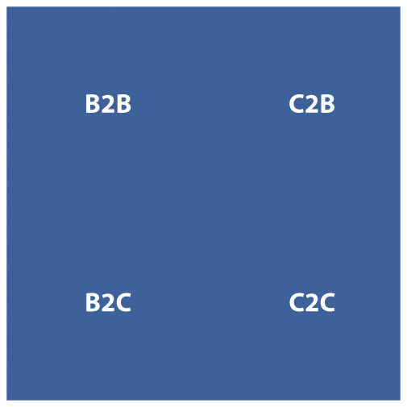

A strategy is a long-term plan of action aimed at achieving a particular outcome. Tactics refer to the immediate actions taken to execute a strategy. While most of the chapters in this textbook refer to the tactics that the Internet has afforded to marketing, the essential first step to executing any online campaign is in the planning: strategy.
“Strategy” comes from the Greek strategos, which itself is derived from two words:
“Tactic” also comes from Greek: taktika for deploying or arranging.
In wars and business, a strategy usually intends the same outcome: winning.
Treatises on strategy abound. The Art of War was written by Sun Tsu in the sixth century B.C., and this ancient Chinese text on military strategy often forms the foundation of business strategy today. Move forward a few millennia, and a course in marketing will include Porter’s five forces, McCarthy’s four Ps, and Humphrey’s SWOT analysis. At the time that the framework for the Internet was being researched and developed, economists and academics were laying the foundation for principles still leading marketing thought today.
The Internet has had a far greater impact on marketing and business than the ubiquitous e-mail newsletter and the need for search engine optimization (SEO). It is not just the way in which products and services can be marketed that has changed, but new products and services are being developed as well.
Figure 19.1 Four Types of Markets
The Internet has changed the types of products that can be sold, has changed the market for products in terms of geography, has had a huge impact in the way products are sold and marketed, and has seen a significant shift in the balance of power between businesses and consumers. Where marketing once was seen as a one-way broadcast channel, with customer wants and needs driven by focus groups, today effective marketing is based on a two-way conversation that happens person to person.
However, the Internet does not necessarily mean throwing out the rule book of marketing and business foundations and principles. Instead, the Internet provides a new environment in which to build on these principles. Profit is still revenue less cost. The Internet does not change that.